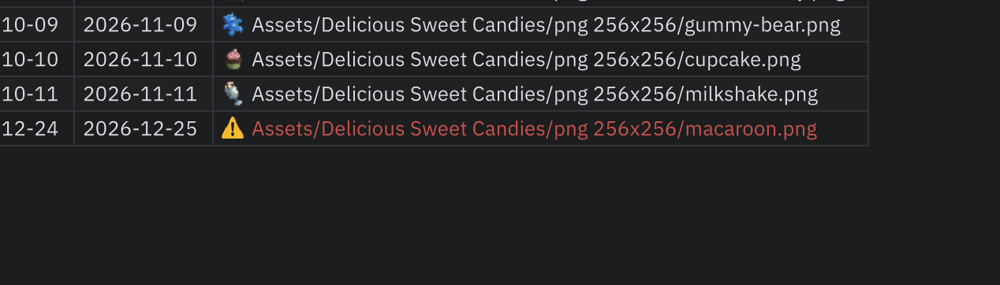

에셋 경로
값이 에셋을 가리키는 열을 자동으로 알아보고, 셀에서 바로 에셋을 확인하고 넣을 수 있게 합니다.
알아보는 값
| 형식 | 예 |
|---|---|
| Resources 기준 경로(확장자 없음) | Art/Sprite/Buff/spr_buff_1000 → 어느 Resources 폴더 아래든 spr_buff_1000.* |
| 프로젝트 경로 | Assets/Art/spr_buff_1000.png, Packages/… |
헤더 행을 뺀 본문에서 값이 있는 칸을 위에서부터 50개까지 보고, 그중 절반 이상이 에셋으로 찾아지면 그 열을 에셋 경로 열로 봅니다. 파일을 열 때, 편집할 때, 프로젝트의 에셋이 바뀔 때 다시 판정합니다.
아이콘과 미리보기

- 에셋 경로 열의 셀은 글자 앞에 Project 창과 같은 아이콘이 붙습니다.
- 셀에 마우스를 잠깐 올려 두면 미리보기 카드가 뜹니다. 텍스처·스프라이트는 큰 그림과 크기를, 프리팹 같은 그 밖의 에셋은 아이콘·종류·경로를 보여 줍니다(프리팹은 불러오는 데 시간이 걸려 미리보기를 만들지 않습니다).
- Ctrl+클릭(macOS는 Cmd+클릭)하거나 우클릭 메뉴의 Project 창에서 보기를 고르면 Project 창에서 그 에셋을 찾아 보여 줍니다.
찾을 수 없는 경로
에셋 경로 열에서 경로처럼 생긴 값(/ 포함)인데 에셋을 찾을 수 없으면 경고 아이콘과 빨간 글자로 표시합니다. 마우스를 올리면 어디를 찾아봤는지 알려 줍니다.

상태 표시줄 왼쪽에 찾을 수 없는 경로 N개가 나타나고, 누를 때마다 다음 문제 칸으로 이동합니다(마지막 다음은 처음으로). /가 없는 값(열 제목, None, - 등)은 경고하지 않습니다.
끌어다 놓기
Project 창의 에셋을 셀로 끌어다 놓으면 그 열이 쓰는 형식으로 경로를 적습니다.

| 열 | 들어가는 값 |
|---|---|
| Resources 경로를 쓰는 열 | Art/Sprite/Shop/spr_shop_1000 |
| 프로젝트 경로를 쓰는 열 | Assets/…/spr_shop_1000.png |
| 아직 경로가 없는 열 | Resources 안의 에셋이면 Resources 경로, 아니면 프로젝트 경로 |
- 여러 개를 끌어 오면 놓은 셀부터 아래로 한 칸에 하나씩 들어갑니다. 끄는 동안 들어갈 칸이 표시됩니다.
- Resources 경로 열에
Resources폴더 밖의 에셋은 놓을 수 없습니다(Resources.Load로 불러올 수 없기 때문입니다). - Undo 한 번으로 되돌아갑니다.
끄기
| 위치 | 범위 |
|---|---|
| Preferences > Tabular Editor > 에셋 경로 미리보기 | 모든 파일 |
| 창 ⋮ 메뉴 > 이 파일에서 에셋 경로 미리보기 | 그 파일만. .meta에 저장되어 팀과 공유됩니다. |
두 곳이 모두 켜져 있어야 표시됩니다.